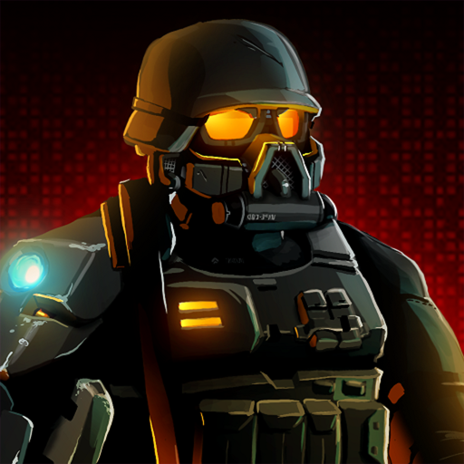
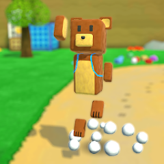
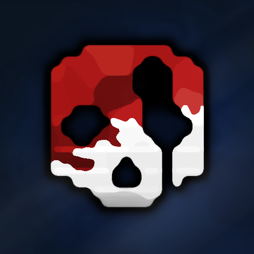
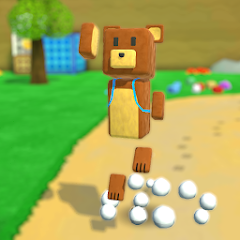
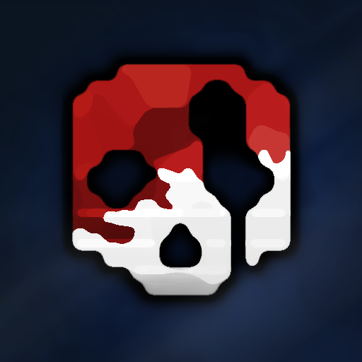
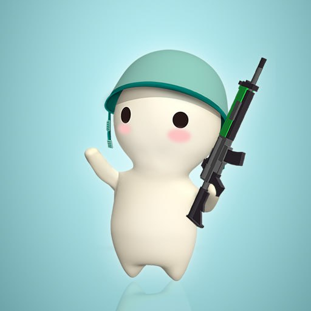
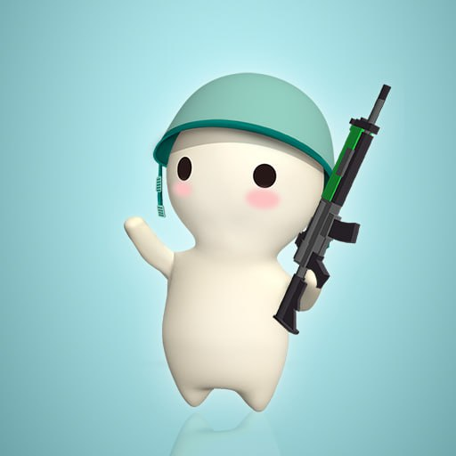
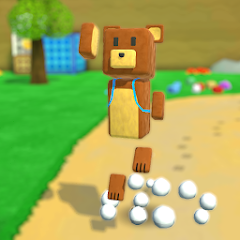
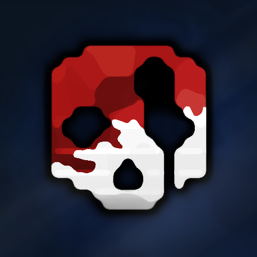
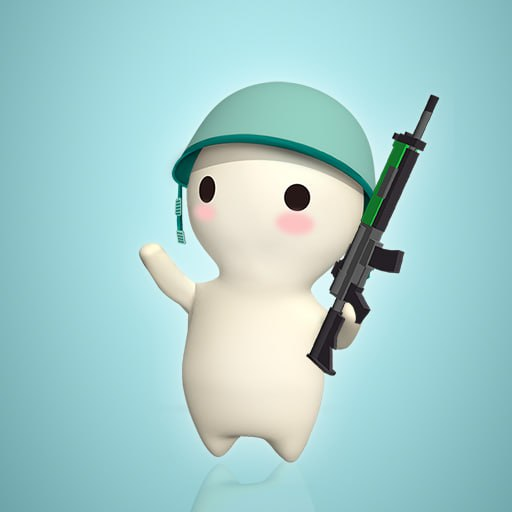

Mobile games that ik speel

 



 




De spellen die hier staan zijn 6 games dat ik kei tof vindt. Ze noemen Sas4, Zombie catchers, Super bear adventures, Gorebox, Color switch, en Milkchoco.